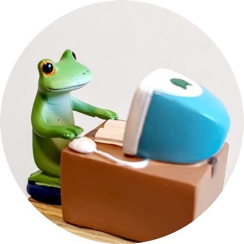

15年以上のWeb制作経験を活かし、UI/UXを考慮した使いやすいWebサイト制作、集客に繋がるSEO対策、 お客様のニーズに合わせたCMS構築などを通して、事業の成長に貢献します。
- 基本情報
- YUBUKI(1983)
- 生息地
- 谷津干潟
- 対応可能作業
-
・UI/UXデザイン ( Figmaによるプロトタイプ作成 )
・コーディング / WordPress構築 ( 独自テーマ開発対応 )
・SEOコンサルティング ( 構造化データ設計 / コンテンツ戦略提案 ) - 作業環境
- Macbook Air M2 - Figma , Phoenix Code 等
- デザインモットー
- 「徹底したわかりやすさ・ミニマリズム」
- 今後特に学びたいこと
-
Vue.js / Webマーケティング
( 将来的には自作アプリの企画・開発にも関心あり ) - 好きなこと
- 写真 / 旅行 / 読書 ( Audible )
- 最近の関心事
- ChatGPTを使った学び直し
- アカウント
- X(旧Twitter)｜ GitHub